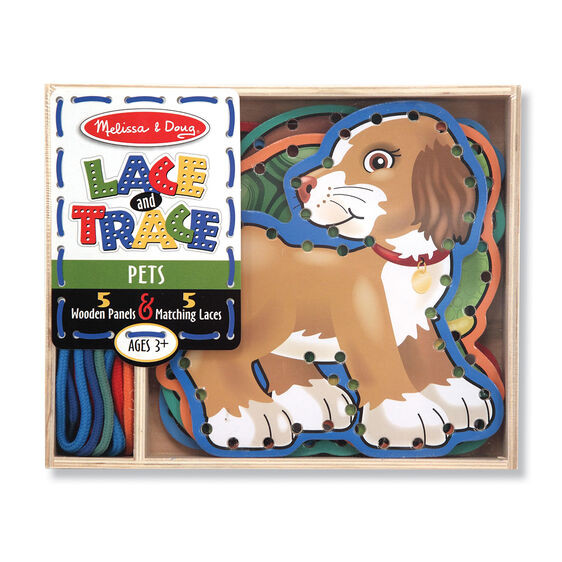
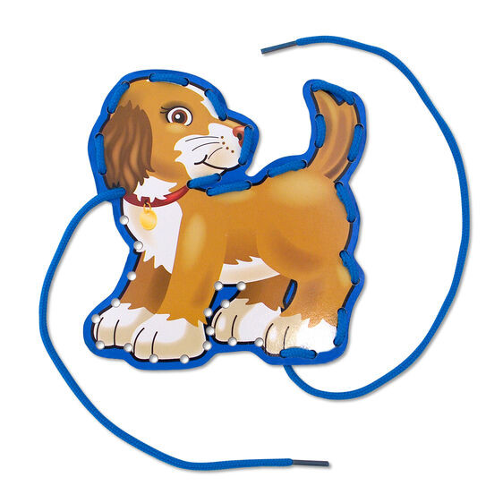

Available
Pets Lace and Trace
Arts and Crafts
R225Charming animals encourage lacing practice 5 double-sided, wooden animals with color-coordinated laces included Ideal for practice of fine motor skills 1.25
Enquire about this product
Pets Lace and Trace at Kids Corner KZN
Pets Lace and Trace is part of our Arts and Crafts collection. Kids Corner KZN stocks toys for learning, pretend play, creative play, gifting and everyday childhood discovery in South Africa.
Browse more Arts and Crafts toys